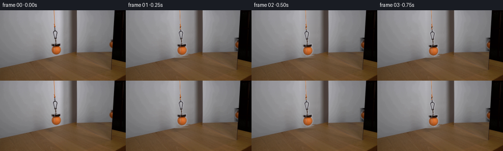
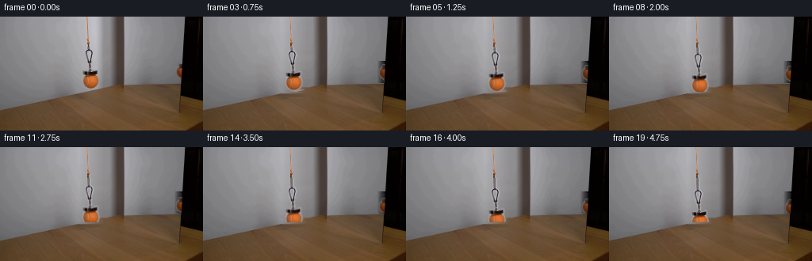

CODING AGENTS AS PIXEL WORLD MODELS
traex/DeepSeek-V4.1-Flash · 0117
点击播放 · 原生 RGB 像素
逐轮保存的候选
回放视频、检查图与代码变化。
每份候选均可单独播放。实际图片检查记录在下方工具轨迹中。
候选 01播放与检查图
点击播放 · 原生 RGB 像素


展开代码变化
--- 上一保存版本
+++ 本次保存版本
@@ -0,0 +1,188 @@
+from pathlib import Path
+
+import numpy as np
+from PIL import Image, ImageFilter
+
+import artifact_io
+
+
+CASE_DIR = Path(__file__).resolve().parent
+FRAME_COUNT = 20
+TOTAL_DROP = 13.0
+
+
+def _horizontal_fill(image, x0, x1, y0, y1):
+ """Reconstruct a smooth background strip from its left and right edges."""
+ out = image.copy()
+ width = x1 - x0
+ if width <= 0:
+ return out
+
+ left = image[y0:y1, x0 - 4 : x0].mean(axis=1)
+ right = image[y0:y1, x1 : x1 + 4].mean(axis=1)
+ weight = np.linspace(0.0, 1.0, width, dtype=np.float32)[None, :, None]
+ out[y0:y1, x0:x1] = left[:, None, :] * (1.0 - weight) + right[:, None, :] * weight
+ return out
+
+
+def _shift_bilinear(source, dy, dx):
+ """Translate an RGBA patch by a fractional pixel offset."""
+ height, width = source.shape[:2]
+ yy, xx = np.mgrid[0:height, 0:width].astype(np.float32)
+ sy = np.clip(yy - dy, 0.0, height - 1.0)
+ sx = np.clip(xx - dx, 0.0, width - 1.0)
+ y0 = np.floor(sy).astype(np.int32)
+ x0 = np.floor(sx).astype(np.int32)
+ y1 = np.minimum(y0 + 1, height - 1)
+ x1 = np.minimum(x0 + 1, width - 1)
+ wy = (sy - y0)[..., None]
+ wx = (sx - x0)[..., None]
+
+ top = source[y0, x0] * (1.0 - wx) + source[y0, x1] * wx
+ bottom = source[y1, x0] * (1.0 - wx) + source[y1, x1] * wx
+ return top * (1.0 - wy) + bottom * wy
+
+
+def _composite(dst, patch, alpha, x, y):
+ """Alpha-composite a patch whose top-left corner is at (x, y)."""
+ height, width = patch.shape[:2]
+ x0 = max(0, x)
+ y0 = max(0, y)
+ x1 = min(dst.shape[1], x + width)
+ y1 = min(dst.shape[0], y + height)
+ if x1 <= x0 or y1 <= y0:
+ return
+
+ sx0, sy0 = x0 - x, y0 - y
+ sx1, sy1 = sx0 + (x1 - x0), sy0 + (y1 - y0)
+ a = alpha[sy0:sy1, sx0:sx1, None]
+ dst[y0:y1, x0:x1] = dst[y0:y1, x0:x1] * (1.0 - a) + patch[sy0:sy1, sx0:sx1] * a
+
+
+def _soften(mask, radius=0.65):
+ image = Image.fromarray(np.uint8(np.clip(mask, 0.0, 1.0) * 255.0))
+ image = image.filter(ImageFilter.GaussianBlur(radius))
+ return np.asarray(image, dtype=np.float32) / 255.0
+
+
+def _dilate(mask):
+ result = mask.copy()
+ for dy in (-1, 0, 1):
+ for dx in (-1, 0, 1):
+ shifted = np.zeros_like(mask)
+ ys0, ys1 = max(0, dy), mask.shape[0] + min(0, dy)
+ xs0, xs1 = max(0, dx), mask.shape[1] + min(0, dx)
+ yd0, yd1 = max(0, -dy), mask.shape[0] + min(0, -dy)
+ xd0, xd1 = max(0, -dx), mask.shape[1] + min(0, -dx)
+ shifted[yd0:yd1, xd0:xd1] = mask[ys0:ys1, xs0:xs1]
+ result = np.maximum(result, shifted)
+ return result
+
+
+def _build_assets(original):
+ rgb = original.astype(np.float32)
+ gray = rgb.mean(axis=2)
+ saturation = (rgb.max(axis=2) - rgb.min(axis=2)) / np.maximum(rgb.max(axis=2), 1.0)
+
+ # Estimate the plain wall/table background behind the complete hanging assembly.
+ background = _horizontal_fill(rgb, 100, 132, 0, 102)
+
+ # Magnet plus ball. Color and tonal differences recover both the orange ball
+ # and the dark magnet without carrying a rectangular background patch.
+ ax0, ax1, ay0, ay1 = 102, 128, 39, 95
+ patch_rgb = rgb[ay0:ay1, ax0:ax1]
+ patch_bg = background[ay0:ay1, ax0:ax1]
+ color_delta = np.linalg.norm(patch_rgb - patch_bg, axis=2)
+ alpha = (
+ ((gray[ay0:ay1, ax0:ax1] < 118.0) & (color_delta > 12.0))
+ | ((saturation[ay0:ay1, ax0:ax1] > 0.16) & (color_delta > 10.0))
+ ).astype(np.float32)
+ alpha = _dilate(alpha)
+ alpha = _soften(alpha, 0.7)
+ assembly = np.dstack([patch_rgb, alpha])
+
+ # The reflection is the narrow warm sliver at the mirror's right edge.
+ rx0, rx1, ry0, ry1 = 219, 231, 58, 83
+ refl_rgb = rgb[ry0:ry1, rx0:rx1]
+ refl_sat = saturation[ry0:ry1, rx0:rx1]
+ refl_gray = gray[ry0:ry1, rx0:rx1]
+ refl_alpha = (
+ ((refl_sat > 0.24) & (refl_gray < 175.0))
+ | ((refl_gray < 70.0) & (refl_sat > 0.12))
+ ).astype(np.float32)
+ refl_alpha[:, -1] = 0.0
+ refl_alpha = _dilate(refl_alpha)
+ refl_alpha = _soften(refl_alpha, 0.55)
+ reflection = np.dstack([refl_rgb, refl_alpha])
+
+ cord_rgb = rgb[0:35, 108:113].copy()
+ cord_sat = saturation[0:35, 108:113]
+ cord_alpha = np.clip((cord_sat - 0.08) / 0.20, 0.0, 1.0)
+ cord_alpha = _soften(cord_alpha, 0.35)
+ cord = np.dstack([cord_rgb, cord_alpha])
+
+ clean_plate = _horizontal_fill(rgb, 100, 132, 0, 102)
+ clean_plate = _horizontal_fill(clean_plate, 219, 231, 56, 84)
+ return clean_plate, assembly, reflection, cord
+
+
+def _draw_cord(frame, cord, bottom):
+ """Keep the cord pinned at the top while its lower end follows the magnet."""
+ source = cord
+ for y in range(max(0, int(np.floor(bottom)))):
+ src_y = y if y < source.shape[0] else 27 + ((y - 35) % 8)
+ row = source[src_y]
+ x = 108
+ alpha = row[:, 3:4]
+ frame[y, x : x + row.shape[0]] = (
+ frame[y, x : x + row.shape[0]] * (1.0 - alpha) + row[:, :3] * alpha
+ )
+
+ # A restrained dark continuation reads as the attachment just above the magnet.
+ attach_top = 34
+ attach_bottom = max(attach_top, int(round(bottom - 4.0)))
+ if attach_bottom > attach_top:
+ shadow = np.array([42.0, 34.0, 30.0], dtype=np.float32)
+ frame[attach_top:attach_bottom, 110:112] = frame[attach_top:attach_bottom, 110:112] * 0.40 + shadow * 0.60
+
+
+def generate():
+ original = np.asarray(Image.open(CASE_DIR / "first_frame.png").convert("RGB"))
+ clean_plate, assembly, reflection, cord = _build_assets(original)
+ frames = np.empty((FRAME_COUNT, 144, 256, 3), dtype=np.uint8)
+ frames[0] = original
+
+ for index in range(1, FRAME_COUNT):
+ progress = index / (FRAME_COUNT - 1)
+ drop = TOTAL_DROP * progress
+ frame = clean_plate.copy()
+
+ assembly_top = 39 + drop
+ _draw_cord(frame, cord, assembly_top)
+
+ moved = _shift_bilinear(assembly, drop, 0.0)
+ _composite(
+ frame,
+ moved[:, :, :3],
+ moved[:, :, 3],
+ 102,
+ 39,
+ )
+
+ reflected = _shift_bilinear(reflection, drop * 0.55, 0.0)
+ reflected_rgb = reflected[:, :, :3] * 0.92
+ _composite(
+ frame,
+ reflected_rgb,
+ reflected[:, :, 3],
+ 219,
+ 58,
+ )
+
+ frames[index] = np.clip(frame + 0.5, 0.0, 255.0).astype(np.uint8)
+
+ artifact_io.save(frames, CASE_DIR)
+
+
+if __name__ == "__main__":
+ generate()
候选 02播放与检查图
点击播放 · 原生 RGB 像素

展开代码变化
--- 上一保存版本
+++ 本次保存版本
@@ -8,7 +8,7 @@
CASE_DIR = Path(__file__).resolve().parent
FRAME_COUNT = 20
-TOTAL_DROP = 13.0
+TOTAL_DROP = 10.0
def _horizontal_fill(image, x0, x1, y0, y1):
@@ -22,6 +22,20 @@
right = image[y0:y1, x1 : x1 + 4].mean(axis=1)
weight = np.linspace(0.0, 1.0, width, dtype=np.float32)[None, :, None]
out[y0:y1, x0:x1] = left[:, None, :] * (1.0 - weight) + right[:, None, :] * weight
+ return out
+
+
+def _inpaint_rows(image, spans):
+ """Fill short occluded spans from their immediate left and right neighbors."""
+ out = image.copy()
+ for y0, y1, x0, x1 in spans:
+ width = x1 - x0
+ if width <= 0:
+ continue
+ left = image[y0:y1, x0 - 2 : x0].mean(axis=1)
+ right = image[y0:y1, x1 : x1 + 2].mean(axis=1)
+ weight = np.linspace(0.0, 1.0, width, dtype=np.float32)[None, :, None]
+ out[y0:y1, x0:x1] = left[:, None, :] * (1.0 - weight) + right[:, None, :] * weight
return out
@@ -84,8 +98,16 @@
gray = rgb.mean(axis=2)
saturation = (rgb.max(axis=2) - rgb.min(axis=2)) / np.maximum(rgb.max(axis=2), 1.0)
- # Estimate the plain wall/table background behind the complete hanging assembly.
- background = _horizontal_fill(rgb, 100, 132, 0, 102)
+ # Estimate the local background behind the hanging assembly while preserving
+ # the photographed wall, mirror, and table everywhere else.
+ background = _inpaint_rows(
+ rgb,
+ [
+ (0, 42, 107, 114),
+ (41, 71, 106, 123),
+ (68, 93, 103, 125),
+ ],
+ )
# Magnet plus ball. Color and tonal differences recover both the orange ball
# and the dark magnet without carrying a rectangular background patch.
@@ -121,8 +143,8 @@
cord_alpha = _soften(cord_alpha, 0.35)
cord = np.dstack([cord_rgb, cord_alpha])
- clean_plate = _horizontal_fill(rgb, 100, 132, 0, 102)
- clean_plate = _horizontal_fill(clean_plate, 219, 231, 56, 84)
+ clean_plate = background
+ clean_plate = _inpaint_rows(clean_plate, [(61, 79, 222, 230)])
return clean_plate, assembly, reflection, cord
@@ -169,7 +191,7 @@
39,
)
- reflected = _shift_bilinear(reflection, drop * 0.55, 0.0)
+ reflected = _shift_bilinear(reflection, drop, 0.0)
reflected_rgb = reflected[:, :, :3] * 0.92
_composite(
frame,
候选 03播放与检查图
可观测工具轨迹
实际执行的命令与返回图片。
命令 1exit 0
/bin/bash -lc "pwd && rg --files -g '"'!*.mp4'"' -g '"'!*.webm'"' -g '"'!*.gif'"' | sort"
命令 2exit 0
/bin/bash -lc "printf '%s\\n' '--- prompt.txt ---'; sed -n '1,240p' prompt.txt; printf '%s\\n' '--- GENERATION_RULES.md ---'; sed -n '1,260p' GENERATION_RULES.md"
命令 3exit 0
/bin/bash -lc 'ls -la; file first_frame.png 2>/dev/null || true; identify first_frame.png 2>/dev/null || true; git status --short 2>/dev/null || true'
命令 4exit 0
/bin/bash -lc "sed -n '1,260p' artifact_io.py"
命令 5exit 0
/bin/bash -lc "sed -n '1,260p' player_template.html"
命令 6exit 0
/bin/bash -lc "python - <<'PY'
from PIL import Image
import numpy as np
im=np.array(Image.open('first_frame.png').convert('RGB'))
print(im.shape,im.dtype, im.min(), im.max(), im.mean(axis=(0,1)))
print('unique',len(np.unique(im.reshape(-1,3),axis=0)))
PY"命令 7exit 0
/bin/bash -lc "python - <<'PY'
from PIL import Image
import numpy as np
from collections import Counter
im=np.array(Image.open('first_frame.png').convert('RGB'))
# coarse 16-level quantized histogram
q=(im//16)*16
c=Counter(map(tuple,q.reshape(-1,3)))
for k,v in c.most_common(40): print(k,v, round(v/im.shape[0]/im.shape[1]*100,2))
print('corners/edges')
for y,x in [(0,0),(0,255),(143,0),(143,255),(72,128),(72,0),(72,255),(0,128),(143,128)]: print((x,y), im[y,x])
PY"命令 8exit 0
/bin/bash -lc "python - <<'PY'
from PIL import Image
import numpy as np
im=np.array(Image.open('first_frame.png').convert('RGB')).astype(float)
g=im.mean(2)
# average 4x4 blocks to 64x36, print gradient char
h,w=g.shape
b=g[:144,:256].reshape(36,4,64,4).mean((1,3))
chars=' .:-=+*#%@'
for row in b:
print(''.join(chars[min(9,int(v/256*10))] for v in row))
PY"命令 9exit 0
/bin/bash -lc "python - <<'PY'
from PIL import Image
import numpy as np
im=np.array(Image.open('first_frame.png').convert('RGB'))
r,g,b=[im[:,:,i].astype(float) for i in range(3)]
mx=im.max(2); mn=im.min(2); sat=(mx-mn)/np.maximum(mx,1)
# likely tennis yellow-green: high green, R/G ratio, B low, saturation
for name,mask in [
('yellow-green',(g>80)&(g>r*0.85)&(g>b*1.3)&(sat>.35)),
('green_dom',(g>r+5)&(g>b+15)&(sat>.25)),
('orange',(r>80)&(r>g*1.35)&(g>b*1.2)&(sat>.4)),
('bright',(mx>170)),
('red',(r>g+25)&(r>b+25)),
]:
ys,xs=np.where(mask)
print(name,len(xs), 'bbox', (xs.min(),ys.min(),xs.max(),ys.max()) if len(xs) else None)
if len(xs):
print(' mean rgb',im[mask].mean(0),'median',np.median(im[mask],axis=0))
# bins
H=np.histogram2d(xs,ys,bins=[16,9],range=[[0,256],[0,144]])[0]
for row in H.T[::-1]: print(''.join(' .:-=+*#%@'[min(9,int(v/H.max()*10))] for v in row))
PY"命令 10exit 0
/bin/bash -lc "python - <<'PY'
from PIL import Image
import numpy as np
im=np.array(Image.open('first_frame.png').convert('RGB'))
# list colors at candidate ball region x90-150 y45-105 by saturation / high brightness, print rgb at grid
for y in range(45,106,5):
print(y, ' '.join(f'{tuple(im[y,x])}' for x in range(90,151,5)))
PY"命令 11exit 0
/bin/bash -lc "python - <<'PY'
from PIL import Image
import numpy as np
from scipy.ndimage import gaussian_filter, sobel
im=np.array(Image.open('first_frame.png').convert('RGB')).astype(float)
g=im.mean(2)
e=np.hypot(sobel(g,0),sobel(g,1))
e=gaussian_filter(e,1)
# sample 2x2 mean ->128x72
E=e.reshape(72,2,128,2).mean((1,3))
chars=' .:-=+*#%@'
mx=np.percentile(E,99)
for row in E:
print(''.join(chars[min(9,int(v/mx*10))] for v in row))
PY"命令 12exit 0
/bin/bash -lc "python - <<'PY'
from PIL import Image
import numpy as np
im=np.array(Image.open('first_frame.png').convert('RGB'))
for box in [(80,30,170,110),(100,40,160,110),(0,0,256,144)]:
x0,y0,x1,y1=box; a=im[y0:y1,x0:x1].reshape(-1,3)
hsv=np.array(Image.fromarray(a.reshape(y1-y0,x1-x0,3)).convert('HSV')).reshape(-1,3)
print('\\nBOX',box,'N',len(a))
for condname,mask in [
('sat>80',hsv[:,1]>80),('sat>120',hsv[:,1]>120),('val>180',hsv[:,2]>180),
('yellow hue 20-45 sat>60',(hsv[:,0]>20)&(hsv[:,0]<45)&(hsv[:,1]>60)),
('orange hue 5-25 sat>100',(hsv[:,0]>=5)&(hsv[:,0]<25)&(hsv[:,1]>100)),
('dark val<30',hsv[:,2]<30)]:
vals=a[mask]
print(condname,len(vals), vals.mean(0).round(1) if len(vals) else '')
if len(vals):
from collections import Counter
c=Counter(map(tuple,(vals//16)*16))
print(c.most_common(8))
PY"命令 13exit 0
/bin/bash -lc "python - <<'PY'
from PIL import Image
import numpy as np
im=np.array(Image.open('first_frame.png').convert('RGB')).astype(float)
# block average 8x8 and print mean rgb + HSV descriptor
H,W=im.shape[:2]
for y in range(0,H,8):
row=[]
for x in range(0,W,8):
p=im[y:y+8,x:x+8].mean((0,1))
hsv=np.array(Image.fromarray(p.astype(np.uint8)[None,None]).convert('HSV'))[0,0]
h,s,v=hsv
if v<35: ch='K'
elif s<35: ch='.' if v<90 else ('g' if v<140 else ('G' if v<180 else 'W'))
elif h<10: ch='r'
elif h<22: ch='o'
elif h<40: ch='y'
elif h<70: ch='l'
elif h<110: ch='n'
elif h<150: ch='c'
elif h<190: ch='b'
elif h<230: ch='p'
else: ch='m'
row.append(ch)
print(f'{y:3}', ''.join(row))
PY"命令 14exit 0
/bin/bash -lc "python - <<'PY'
from PIL import Image
import numpy as np
im=np.array(Image.open('first_frame.png').convert('RGB')).astype(int)
# saturation mask in central upper region, print chars for hue/value every pixel at 2x downsample
sub=im[40:115,70:170]
hsv=np.array(Image.fromarray(sub.astype(np.uint8)).convert('HSV'))
for y in range(0,75,2):
row=''
for x in range(0,100,2):
h,s,v=hsv[y:y+2,x:x+2].reshape(-1,3).mean(0)
if s>100 and 5<=h<=35 and v>80: c='O'
elif s>70 and 5<=h<=45: c='o'
elif v>150 and s<35: c='G'
elif v<60: c='K'
elif s<35: c='.'
else: c=' '
row+=c
print(f'{y+40:3} {row}')
PY"命令 15exit 0
/bin/bash -lc "python - <<'PY'
from PIL import Image
import numpy as np
im=np.array(Image.open('first_frame.png').convert('RGB'))
# region rows central, print RGB for ball around 105-135 x, 72-89
for y in range(68,92,2):
print('y',y)
for x in range(100,141,4):
print(f'{x}:{tuple(im[y,x])}',end=' ')
print()
PY"命令 16exit 0
/bin/bash -lc "python - <<'PY'
from PIL import Image
import numpy as np
im=np.array(Image.open('first_frame.png').convert('RGB')).astype(float)
# use hue saturation val mask orange object top ball, identify pixels saturation >0.35 and value >100 and x80:145 y65:100
rgb=im[60:100,90:140]
mx=rgb.max(2); mn=rgb.min(2); sat=(mx-mn)/np.maximum(mx,1)
mask=(sat>.35)&(mx>90)
y,x=np.where(mask)
print('bbox local',x.min(),y.min(),x.max(),y.max(),'global',x.min()+90,y.min()+60,x.max()+90,y.max()+60, 'count',len(x))
# row extents
for yy in range(mask.shape[0]):
xs=np.where(mask[yy])[0]
if len(xs): print(yy+60, xs.min()+90,xs.max()+90,len(xs))
PY"命令 17exit 0
/bin/bash -lc "python - <<'PY'
from PIL import Image
import numpy as np
im=np.array(Image.open('first_frame.png').convert('RGB')).astype(float)
# row-wise dominant segments by columns, inspect vertical structure with average RGB at x slices
for x in range(60,181,10):
print('x',x)
for y in range(0,110,5):
print(f'{y}:{tuple(im[y,x].astype(int))}',end=' ')
print()
PY"命令 18exit 0
/bin/bash -lc "python - <<'PY'
from PIL import Image
import numpy as np
im=np.array(Image.open('first_frame.png').convert('RGB'))
# exact unique frequent colors around object
from collections import Counter
a=im[65:95,95:135].reshape(-1,3)
c=Counter(map(tuple,a))
print('unique',len(c))
for k,v in c.most_common(50): print(k,v)
PY"命令 19exit 0
/bin/bash -lc "python - <<'PY'
from PIL import Image
import numpy as np
from scipy.ndimage import label
im=np.array(Image.open('first_frame.png').convert('RGB')).astype(float)
hsv=np.array(Image.fromarray(im.astype(np.uint8)).convert('HSV')).astype(float)
# orange/chroma: hue 0-35, sat>80, val>60
mask=(hsv[:,:,0]<38)&(hsv[:,:,1]>80)&(hsv[:,:,2]>60)
lab,n=label(mask)
for i in range(1,n+1):
ys,xs=np.where(lab==i)
if len(xs)>=10:
print(i,len(xs),(xs.min(),ys.min(),xs.max(),ys.max()),'mean',im[ys,xs].mean(0).round(1),'hsv',hsv[ys,xs].mean(0).round(1))
# mirror boundary detect at each x by gradients vertical
PY"命令 20exit 0
/bin/bash -lc "python - <<'PY'
from PIL import Image
import numpy as np
im=np.array(Image.open('first_frame.png').convert('RGB')).astype(float)
hsv=np.array(Image.fromarray(im.astype(np.uint8)).convert('HSV')).astype(float)
# Find ball in 95:135 65:95 by orange mask; print centroid extents using circle-like mask
sub=im[65:95,95:135]; hs=hsv[65:95,95:135]
for st in [40,60,80,100,120,140]:
m=(hs[:,:,0]<30)&(hs[:,:,1]>st)&(hs[:,:,2]>50)
ys,xs=np.where(m)
print(st,len(xs),(xs.min()+95,ys.min()+65,xs.max()+95,ys.max()+65) if len(xs) else None)
# find object mask, derive circle fit radius
m=(hs[:,:,0]<30)&(hs[:,:,1]>100)&(hs[:,:,2]>80)
ys,xs=np.where(m); xs=xs+95; ys=ys+65
# likely ball only y<89
sel=ys<89;xs=xs[sel];ys=ys[sel]
A=np.c_[2*xs,2*ys,np.ones(len(xs))]; b=xs*xs+ys*ys
sol=np.linalg.lstsq(A,b,rcond=None)[0]; cx,cy,c=sol; r=np.sqrt(c+cx*cx+cy*cy)
print('fit',cx,cy,r,'mean',im[ys,xs].mean(0))
PY"命令 21exit 0
/bin/bash -lc "python - <<'PY'
from PIL import Image
import numpy as np
im=np.array(Image.open('first_frame.png').convert('RGB'))
# print pixels around cord x106-116 y0-70, identify colors each row
for y in range(0,72,2):
print(f'{y:2}', ' '.join(f'{x}:{tuple(im[y,x])}' for x in range(106,117)))
PY"命令 22exit 0
/bin/bash -lc "python - <<'PY'
from PIL import Image
import numpy as np
im=np.array(Image.open('first_frame.png').convert('RGB'))
hsv=np.array(Image.fromarray(im).convert('HSV'))
print(' '+''.join(str((x//10)%10) for x in range(85,151)))
print(' '+''.join(str(x%10) for x in range(85,151)))
for y in range(55,106):
row=''
for x in range(85,151):
h,s,v=hsv[y,x]
r,g,b=im[y,x]
if v<45: c='K'
elif s<25 and v<100: c='d'
elif s<25 and v<145: c='.'
elif s<25 and v<180: c='g'
elif s<25: c='G'
elif h<10 and s>100: c='R'
elif h<20 and s>80: c='O'
elif h<30 and s>80: c='o'
elif h<45 and s>60: c='y'
elif h<70 and s>60: c='l'
elif s>80: c='x'
else: c=','
row+=c
print(f'{y:3} '+row)
PY"命令 23exit 0
/bin/bash -lc "python - <<'PY'
from PIL import Image
import numpy as np
im=np.array(Image.open('first_frame.png').convert('RGB'))
hsv=np.array(Image.fromarray(im).convert('HSV'))
print(' '+''.join(str((x//10)%10) for x in range(190,256)))
print(' '+''.join(str(x%10) for x in range(190,256)))
for y in range(45,101):
row=''
for x in range(190,256):
h,s,v=hsv[y,x]
if v<45: c='K'
elif s<25 and v<100: c='d'
elif s<25 and v<145: c='.'
elif s<25 and v<180: c='g'
elif s<25: c='G'
elif h<10 and s>100: c='R'
elif h<20 and s>80: c='O'
elif h<30 and s>80: c='o'
elif h<45 and s>60: c='y'
elif h<70 and s>60: c='l'
elif s>80: c='x'
else: c=','
row+=c
print(f'{y:3} '+row)
PY"命令 24exit 0
/bin/bash -lc "python - <<'PY'
from PIL import Image
import numpy as np
im=np.array(Image.open('first_frame.png').convert('RGB'))
for x in range(150,236,4):
# identify orange low sat boundary and values y40-100
p=im[45:100,x]
print(f'x{x:3}', ' '.join(f'{y+45}:{tuple(p[y])}' for y in range(0,55,5)))
PY"命令 25exit 0
/bin/bash -lc "python - <<'PY'
from PIL import Image
import numpy as np
im=np.array(Image.open('first_frame.png').convert('RGB')).astype(float)
# color gradients along rows near mirror to identify edge positions
for y in [0,20,40,60,70,80,84,88,92,100,110,120,130,140]:
g=np.linalg.norm(np.diff(im[y],axis=0),axis=1)
peaks=np.argsort(g)[-15:][::-1]
print('y',y,[(int(x),round(float(g[x]),1),tuple(im[y,x].astype(int))) for x in peaks[:10]])
PY"命令 26exit 0
/bin/bash -lc "python - <<'PY'
from PIL import Image
import numpy as np
im=np.array(Image.open('first_frame.png').convert('RGB'))
print(' '+''.join(str((x//10)%10) for x in range(210,236)))
print(' '+''.join(str(x%10) for x in range(210,236)))
for y in range(45,95):
row=''
for x in range(210,236):
r,g,b=map(int,im[y,x]); v=max(r,g,b); mn=min(r,g,b); s=(v-mn)/max(v,1)
if v<30:c='K'
elif s<0.2 and v<80:c='d'
elif s<0.2 and v<120:c='.'
elif s<0.2 and v<160:c='g'
elif s<0.2:c='G'
elif r>g+20 and g>b+15:
c='R' if v>120 else 'r'
else:c='?'
row+=c
print(f'{y:3} '+row)
# RGB around component
for y in range(58,80):
print(y, [tuple(im[y,x]) for x in range(218,232,2)])
PY"命令 27exit 0
/bin/bash -lc "python - <<'PY'
from PIL import Image
import numpy as np
im=np.array(Image.open('first_frame.png').convert('RGB')).astype(float)
# gradients vertical, top 100, list y boundaries
for x in [150,160,170,180,190,200,210,220,225,228]:
g=np.linalg.norm(np.diff(im[:,x],axis=0),axis=1)
peaks=np.argsort(g)[-8:][::-1]
print('x',x,[(int(y),round(float(g[y]),1),tuple(im[y,x].astype(int))) for y in peaks[:6]])
# hue map of area
PY"命令 28exit 0
/bin/bash -lc "python - <<'PY'
from PIL import Image
import numpy as np
im=np.array(Image.open('first_frame.png').convert('RGB')).astype(float)
# median filter over x to visualize rows at selected y values every 2
for y in range(55,86,2):
vals=[]
for x in range(205,232):
r,g,b=im[y,x]
sat=(max(r,g,b)-min(r,g,b))/max(max(r,g,b),1)
if sat>.25 and r>60: vals.append(x)
print(y, vals, [tuple(im[y,x].astype(int)) for x in vals[::max(1,len(vals)//4)]])
PY"命令 29exit 0
/bin/bash -lc "python - <<'PY'
from PIL import Image
import numpy as np
im=np.array(Image.open('first_frame.png').convert('RGB')).astype(float)
# inspect strong vertical lines median x profile of gradient for various y
for y0,y1 in [(0,84),(0,60),(85,100),(100,143)]:
g=np.linalg.norm(np.diff(im[y0:y1],axis=1),axis=2).mean(0)
peaks=np.argsort(g)[-20:][::-1]
print((y0,y1),[(int(x),round(float(g[x]),1)) for x in sorted(peaks[:15])])
# print mean rgb by vertical strips at top half
for a,b in [(0,84),(85,100),(101,143)]:
print('range',a,b)
for x in range(0,256,16): print(x, tuple(im[a:b,x:x+16].mean((0,1)).round(1)))
PY"命令 30exit 0
/bin/bash -lc "python - <<'PY'
from PIL import Image
import numpy as np
im=np.array(Image.open('first_frame.png').convert('RGB')).astype(float)
# inspect center rows and frame geometric layout every 4 px via normalized rgb
for y in [0,20,40,60,80,84,85,90,100,120,140]:
print('\\ny',y)
for x in range(0,256,8):
r,g,b=im[y:y+1,x:x+1].mean((0,1))
print(f'{x:3}:{int(r):3},{int(g):3},{int(b):3}',end=' ')
print()
PY"命令 31exit 0
/bin/bash -lc "python - <<'PY'
from PIL import Image
import numpy as np
im=np.array(Image.open('first_frame.png').convert('RGB')).astype(float)
# Find similarity of mirror region to ball colors
ball=im[73:91,105:124]
bmean=ball.mean((0,1)); print('ball mean',bmean)
# print max values in refl region
reg=im[60:85,222:230]
print('ref mean',reg.mean((0,1)),'max',reg.max((0,1)),'min',reg.min((0,1)))
# estimate gradients and see lines positions per y in left mirror
for y in [0,20,40,60,80,84]:
print(y, [(x,tuple(im[y,x].astype(int))) for x in [104,105,106,107,108,109,110,111,112,113,114,115,116,117,118,119,120,121,122,123,124,125,126,127,128,129,130,131,132,133,134,135,136,137,138,139,140,141,142,143,144,145,146,147,148,149,150,151,152,153,154,155,156,157,158]])
PY"命令 32exit 0
/bin/bash -lc "python - <<'PY'
from PIL import Image
import numpy as np
from scipy.ndimage import gaussian_filter
im=np.array(Image.open('first_frame.png').convert('RGB')).astype(float)
# print gradient map around x90-250 y0-100 threshold strong
sm=gaussian_filter(im,(.7,.7,0))
gx=np.linalg.norm(np.diff(sm,axis=1),axis=2); gy=np.linalg.norm(np.diff(sm,axis=0),axis=2)
print('vertical edges:')
for x in range(95,251):
v=np.mean(gx[:,x])
if v>10: print(x,round(v,1))
print('horizontal edges by row')
for y in range(0,110):
v=np.mean(gy[y,90:250])
if v>10: print(y,round(v,1))
PY"命令 33exit 0
/bin/bash -lc "python - <<'PY'
from PIL import Image
import numpy as np
im=np.array(Image.open('first_frame.png').convert('RGB')).astype(float)
# mirror content maybe synthetic scene: find column-wise mean gradient each y segment
for y0,y1 in [(0,20),(20,40),(40,60),(60,70),(70,84),(85,100),(100,120),(120,143)]:
g=np.linalg.norm(np.diff(im[y0:y1],axis=1),axis=2).mean(0)
xs=np.argsort(g)[-25:]
print((y0,y1),[(int(x),round(float(g[x]),1)) for x in sorted(xs[-15:])])
# exact color at rows around y 10,30,50,70,82 x100-240 with compression to 2 px segments
PY"命令 34exit 0
/bin/bash -lc "python - <<'PY'
from PIL import Image
import numpy as np
im=np.array(Image.open('first_frame.png').convert('RGB')).astype(float)
# white line near x155: values across at y 10,40,80,90,100
for y in [10,40,80,85,90,100,120]:
print('y',y,[(x,tuple(im[y,x].astype(int))) for x in range(150,162)])
PY"命令 35exit 0
/bin/bash -lc "python - <<'PY'
from PIL import Image
import numpy as np
im=np.array(Image.open('first_frame.png').convert('RGB')).astype(float)
# calculate mirrored structural similarity: compare patches via horizontal reflection around candidate axis x=c
for c in [128,130,132,134,136,138,140,142,144,146,148,150,152,154]:
x0=max(0,int(2*c-228)); x1=min(256,int(2*c-156))
# compare left [156:x] with right reversed
# region top 0:84 only, known mirror boundaries? score edges
a=im[:84,156:int(c)]
b=im[:84,int(c)+1:228][:,::-1]
if a.shape[1]>0 and b.shape[1]>0:
n=min(a.shape[1],b.shape[1]); a=a[:,:n];b=b[:,:n]
print(c, np.mean(abs(a-b)), np.mean((a-b)**2)**.5)
PY"命令 36exit 0
/bin/bash -lc "python - <<'PY'
from PIL import Image
import numpy as np
im=np.array(Image.open('first_frame.png').convert('RGB')).astype(float)
# mirror symmetry test with broad region excluding edges, candidates center axis
for c in range(130,156,2):
# compare x c-d .. c and c+1 .. c+1+d
for d in [20,40,60,80]:
if c-d<90 or c+1+d>229: continue
a=im[:84,c-d:c]; b=im[:84,c+1:c+1+d][:,::-1]
print(c,d,round(np.mean(abs(a-b)),2),end=' | ')
print()
PY"命令 37exit 0
/bin/bash -lc 'python generate.py'
命令 38exit 0
/bin/bash -lc 'ls -lh index.html pixels.npz inspection.png transition_check.png frames/*.png | tail -25'
命令 39exit 0
/bin/bash -lc "python - <<'PY'
from PIL import Image
import numpy as np
orig=np.array(Image.open('first_frame.png').convert('RGB'))
frames=np.array([np.array(Image.open(f'frames/{i:02d}.png').convert('RGB')) for i in range(20)])
print(frames.shape,frames.dtype)
print('frame0 exact',np.array_equal(frames[0],orig),'maxdiff',np.abs(frames[0].astype(int)-orig.astype(int)).max())
for i in [0,1,5,10,15,19]:
d=np.abs(frames[i].astype(int)-frames[0].astype(int))
print(i,'mean',d.mean(),'p99',np.percentile(d,99),'max',d.max(),'changed',np.count_nonzero(d))
print('consecutive means',[round(float(np.abs(frames[i].astype(int)-frames[i-1].astype(int)).mean()),2) for i in range(1,20)])
PY"命令 40exit 0
/bin/bash -lc "python - <<'PY'
from PIL import Image
import numpy as np
F=np.array([np.array(Image.open(f'frames/{i:02d}.png')).astype(float) for i in range(20)])
d=np.abs(F[1]-F[0]).max(2)
ys,xs=np.where(d>0)
print('bbox changed',xs.min(),ys.min(),xs.max(),ys.max())
# count diff by 8x8 blocks
H,W=d.shape
for y in range(0,H,8):
row=[]
for x in range(0,W,8):
n=np.count_nonzero(d[y:y+8,x:x+8]>0)
row.append(' .:-=+*#%@'[min(9,int(n/64*10))])
print(f'{y:3} '+''.join(row))
PY"命令 41exit 0
/bin/bash -lc "python - <<'PY'
from PIL import Image
import numpy as np
F=np.array([np.array(Image.open(f'frames/{i:02d}.png')) for i in range(20)])
for idx in [0,1,10,19]:
im=F[idx]
print('\\nFRAME',idx)
for y in range(30,108,3):
row=''
for x in range(88,238,3):
p=im[y:y+3,x:x+3].reshape(-1,3).mean(0)
r,g,b=p
v=max(p); s=(v-min(p))/max(v,1)
if v<40:c='K'
elif s<.12 and v<100:c='d'
elif s<.12 and v<150:c='.'
elif s<.12 and v<185:c='g'
elif s<.12:c='G'
elif r>g+18 and g>b+8:
c='O' if v>150 else 'o'
elif r>g+10:c='r'
else:c=','
row+=c
print(f'{y:3} '+row)
PY"命令 42exit 1
/bin/bash -lc "python - <<'PY'
from PIL import Image
import numpy as np
F=np.array([np.array(Image.open(f'frames/{i:02d}.png')) for i in range(20)])
# crop upscaled all frames into contact sheet in .tmp for local numeric inspection
for name,ids in [('start',[0,1,2,3]),('middle',[6,9,12,15]),('end',[16,17,18,19])]:
ims=[]
for i in ids:
im=Image.fromarray(F[i]).crop((88,25,240,110)).resize((456,255),Image.Resampling.NEAREST)
ims.append(im)
sheet=Image.new('RGB',(456*2,255*2),(20,20,20))
for k,im in enumerate(ims): sheet.paste(im,((k%2)*456,(k//2)*255))
sheet.save(f'.tmp/{name}.png')
# quantify body displacement from orange mask center
for i in range(20):
rgb=F[i].astype(float); mx=rgb.max(2); mn=rgb.min(2); sat=(mx-mn)/np.maximum(mx,1)
mask=(sat>.3)&(rgb[:,:,0]>70)&(rgb[:,:,1]>40)&(np.indices(mask.shape)[0]>70)&(np.indices(mask.shape)[0]<100)
ys,xs=np.where(mask)
print(i,round(xs.mean(),2),round(ys.mean(),2),len(xs))
PY"命令 43exit 0
/bin/bash -lc "python - <<'PY'
from PIL import Image
import numpy as np
F=np.array([np.array(Image.open(f'frames/{i:02d}.png')) for i in range(20)])
for name,ids in [('start',[0,1,2,3]),('middle',[6,9,12,15]),('end',[16,17,18,19])]:
ims=[Image.fromarray(F[i]).crop((88,25,240,110)).resize((456,255),Image.Resampling.NEAREST) for i in ids]
sheet=Image.new('RGB',(912,510),(20,20,20))
for k,im in enumerate(ims): sheet.paste(im,((k%2)*456,(k//2)*255))
sheet.save(f'.tmp/{name}.png')
for i in range(20):
rgb=F[i].astype(float); mx=rgb.max(2); mn=rgb.min(2); sat=(mx-mn)/np.maximum(mx,1)
yy,xx=np.indices(sat.shape)
mask=(sat>.3)&(rgb[:,:,0]>70)&(rgb[:,:,1]>40)&(yy>70)&(yy<100)&(xx<180)
ys,xs=np.where(mask)
print(i,round(xs.mean(),2),round(ys.mean(),2),len(xs))
PY"命令 44exit 0
/bin/bash -lc "python - <<'PY'
from PIL import Image
import numpy as np
F=np.array([np.array(Image.open(f'frames/{i:02d}.png')).astype(float) for i in range(20)])
# body is bright orange, restrict x100:135 y70:102, threshold orange
for i in range(20):
p=F[i,70:102,100:135]; r,g,b=p[:,:,0],p[:,:,1],p[:,:,2]
m=(r>110)&(r>g*1.35)&(g>b*1.3)
ys,xs=np.where(m)
print(i,round(xs.mean()+100,2),round(ys.mean()+70,2),len(xs))
PY"命令 45exit 0
/bin/bash -lc "python - <<'PY'
from PIL import Image
import numpy as np
F=np.array([np.array(Image.open(f'frames/{i:02d}.png')).astype(float) for i in range(20)])
# Track ball using high saturation orange in patch, compare bbox extents
for i in [0,1,2,5,10,15,19]:
p=F[i,65:105,95:135]; r,g,b=p[:,:,0],p[:,:,1],p[:,:,2]
m=(r>100)&(r>g*1.3)&(g>b*1.2)
ys,xs=np.where(m)
print(i,'bbox',xs.min()+95,ys.min()+65,xs.max()+95,ys.max()+65,'centroid',xs.mean()+95,ys.mean()+65,'n',len(xs))
PY"命令 46exit 0
/bin/bash -lc "python - <<'PY'
from PIL import Image
import numpy as np
F=np.array([np.array(Image.open(f'frames/{i:02d}.png')).astype(float) for i in range(20)])
for i in [0,1,10,19]:
print('frame',i)
for y in range(68,101,2):
row=''
for x in range(96,138):
r,g,b=F[i,y,x]
if max(r,g,b)<35: c='K'
elif r>g*1.25 and g>b*1.2 and r>70: c='O'
elif max(r,g,b)-min(r,g,b)<25 and max(r,g,b)>100: c='.'
else:c=' '
row+=c
print(f'{y:3} {row}')
PY"命令 47exit 0
/bin/bash -lc "python - <<'PY'
from PIL import Image
import numpy as np
im=np.array(Image.open('first_frame.png').convert('RGB')).astype(float)
# analyze reflection patch rows 58:84 cols219:231 exact saturation
for y in range(56,86):
print(f'{y:2}', ''.join('#' if ((max(im[y,x])-min(im[y,x]))/max(max(im[y,x]),1)>.25 and max(im[y,x])>60) else ('K' if max(im[y,x])<35 else '.') for x in range(215,234)))
PY"命令 48exit 0
/bin/bash -lc "python - <<'PY'
from PIL import Image
import numpy as np
F=np.array([np.array(Image.open(f'frames/{i:02d}.png')).astype(float) for i in range(20)])
for i in [0,1,10,19]:
print('frame',i)
for y in range(54,86,2):
row=''
for x in range(214,234):
r,g,b=F[i,y,x]; mx=max(r,g,b); mn=min(r,g,b); sat=(mx-mn)/max(mx,1)
if mx<35:c='K'
elif sat>.25 and mx>60:c='#'
elif mx>100:c='.'
else:c=' '
row+=c
print(f'{y:3} {row}')
PY"命令 49exit 0
/bin/bash -lc "python - <<'PY'
from PIL import Image
import numpy as np
F=np.array([np.array(Image.open(f'frames/{i:02d}.png')).astype(float) for i in range(20)])
# Detect mirror bbox via saturation in right half and compare actual orange reflection shape
for i in [0,1,10,19]:
p=F[i,50:90,215:232]; r,g,b=p[:,:,0],p[:,:,1],p[:,:,2]; mx=p.max(2);mn=p.min(2);sat=(mx-mn)/np.maximum(mx,1)
m=(sat>.24)&(mx>60)
ys,xs=np.where(m)
print(i,(xs.min()+215,ys.min()+50,xs.max()+215,ys.max()+50),len(xs))
PY"命令 50exit 0
/bin/bash -lc "python - <<'PY'
from PIL import Image
import numpy as np
im=np.array(Image.open('first_frame.png').convert('RGB')).astype(float)
# Reflection component region exact extents by saturation
for y in range(55,90):
xs=[]
for x in range(210,233):
r,g,b=im[y,x]; mx=max(r,g,b); mn=min(r,g,b); s=(mx-mn)/max(mx,1)
if s>.24 and mx>60: xs.append(x)
if xs: print(y,min(xs),max(xs),len(xs))
PY"命令 51exit 0
/bin/bash -lc "python - <<'PY'
from PIL import Image
import numpy as np
im=np.array(Image.open('first_frame.png').convert('RGB')).astype(float)
# calculate per-column hue/sat of reflection; determine all component around x220-229 y60-77
for y in range(60,78):
print(y,[(x,tuple(im[y,x].astype(int)),round((max(im[y,x])-min(im[y,x]))/max(max(im[y,x]),1),2)) for x in range(220,231)])
PY"命令 52exit 0
/bin/bash -lc "python - <<'PY'
from PIL import Image
import numpy as np
F=np.array([np.array(Image.open(f'frames/{i:02d}.png')).astype(float) for i in range(20)])
# center of high sat orange object region and its relation to reflected blob
for i in [0,5,10,15,19]:
p=F[i,68:92,215:232]; mx=p.max(2); mn=p.min(2); sat=(mx-mn)/np.maximum(mx,1)
m=(sat>.5)&(mx>60)
ys,xs=np.where(m)
print(i,'ref center',xs.mean()+215,ys.mean()+68,'bbox',xs.min()+215,ys.min()+68,xs.max()+215,ys.max()+68,'n',len(xs))
PY"命令 53exit 0
/bin/bash -lc "python - <<'PY'
from PIL import Image
import numpy as np
F=np.array([np.array(Image.open(f'frames/{i:02d}.png')).astype(float) for i in range(20)])
# derive object center robustly from mask centroid y<96 plus comps
for i in [0,1,2,3,5,10,15,19]:
p=F[i,68:96,100:132]; mx=p.max(2); mn=p.min(2); sat=(mx-mn)/np.maximum(mx,1)
m=(sat>.45)&(mx>60)
ys,xs=np.where(m)
print(i,round(xs.mean()+100,2),round(ys.mean()+68,2),len(xs))
PY"命令 54exit 0
/bin/bash -lc "python - <<'PY'
from PIL import Image
import numpy as np
im=np.array(Image.open('first_frame.png').convert('RGB')).astype(float)
# compare output f1 region x100:132 y60:102 to original at shifted source y-1, report mean abs diff
F=np.array(Image.open('frames/01.png')).astype(float)
for dy in [0,.5,1]:
a=F[60:102,100:132]
# use scipy shift source
from scipy.ndimage import shift
b=shift(im,(-dy,0,0),order=1,mode='nearest')[60:102,100:132]
print(dy,np.mean(abs(a-b)),np.mean(abs(a-b)[20:35]))
PY"命令 55exit 0
/bin/bash -lc "python - <<'PY'
from PIL import Image
import numpy as np
F=np.array([np.array(Image.open(f'frames/{i:02d}.png')) for i in range(20)])
# crop difference map frame0 vs frame19 using amplified absolute diff
for i in [1,5,10,15,19]:
d=np.abs(F[i].astype(int)-F[0].astype(int))
vis=np.uint8(np.clip(d*4,0,255))
Image.fromarray(vis).crop((80,0,240,110)).resize((640,440),Image.Resampling.NEAREST).save(f'.tmp/diff_{i:02d}.png')
# print coordinates for frame19 diff > threshold
ys,xs=np.where(np.abs(F[19].astype(int)-F[0].astype(int)).max(2)>5)
print(xs.min(),xs.max(),ys.min(),ys.max(),len(xs))
PY"命令 56exit 0
/bin/bash -lc "python - <<'PY'
from PIL import Image
import numpy as np
im=np.array(Image.open('first_frame.png').convert('RGB')).astype(float)
# assess if cord contains reddish anti-aliased and whether cord top pixel is exactly orange
for y in [0,5,10,15,20,25,30,34]:
print(y,[(x,tuple(im[y,x].astype(int))) for x in range(108,114)])
# ball object mask row extents
PY"命令 57exit 0
/bin/bash -lc "python - <<'PY'
from PIL import Image
import numpy as np
F=np.array(Image.open('frames/01.png')).astype(int)
O=np.array(Image.open('first_frame.png')).astype(int)
for region in [(100,0,132,39),(100,39,132,70),(100,70,132,102)]:
x0,y0,x1,y1=region; d=np.abs(F[y0:y1,x0:x1]-O[y0:y1,x0:x1]);print(region,'mean',d.mean(),'max',d.max(),'nonzero',np.count_nonzero(d))
PY"命令 58exit 0
/bin/bash -lc "python - <<'PY'
from PIL import Image
import numpy as np
O=np.array(Image.open('first_frame.png').convert('RGB')).astype(float)
F=np.array(Image.open('frames/01.png').convert('RGB')).astype(float)
# block averages for object region orig vs output
for y in range(30,105,5):
print('y',y,'orig',tuple(O[y,115].astype(int)),'out',tuple(F[y,115].astype(int)))
PY"命令 59exit 0
/bin/bash -lc "python - <<'PY'
from PIL import Image
import numpy as np
im=np.array(Image.open('first_frame.png').convert('RGB')).astype(float)
# determine background behind cord using adjacent row mean x 100:108 and 114:125, inspect y 0:40
for y in [0,10,20,30,40,45,50,60,70,80]:
left=im[y,100:108].mean(0); right=im[y,115:125].mean(0)
print(y,left.round(1),right.round(1), 'target',im[y,110].astype(int))
PY"命令 60exit 0
/bin/bash -lc "python - <<'PY'
from PIL import Image
import numpy as np
from scipy.ndimage import gaussian_filter
O=np.array(Image.open('first_frame.png').convert('RGB')).astype(float)
F=np.array(Image.open('frames/01.png').convert('RGB')).astype(float)
# show y=115 columns 100-132 orig/out and shifted source
for y in [35,45,55,65,70,75,80,85,90,95]:
print('y',y)
print(' O',[(x,tuple(O[y,x].astype(int))) for x in range(102,130,3)])
print(' F',[(x,tuple(F[y,x].astype(int))) for x in range(102,130,3)])
PY"命令 61exit 0
/bin/bash -lc "python - <<'PY'
from PIL import Image
import numpy as np
O=np.array(Image.open('first_frame.png').convert('RGB')).astype(float)
# Search row-wise best vertical copy for output background x100:132 y0:40
# background generated currently 155 vs orig 180 due x0-4 and x1+4 interpolation? inspect helper values
for y in [0,10,20,30,40]:
print('y',y,'left',O[y,96:100].mean(0).round(1),'at100',O[y,100].round(1),'at131',O[y,131].round(1),'right',O[y,132:136].mean(0).round(1))
PY"命令 62exit 0
/bin/bash -lc "python - <<'PY'
from PIL import Image
import numpy as np
O=np.array(Image.open('first_frame.png').convert('RGB')).astype(float)
# Rows: determine background profile beyond object at x 90-100 and 132-145; output at y35 x115 was 159 due interpolated right=143, left=175. Actual background 186. Why? source bg at x130 drops due mirror border shadow, but x115 is inside mirror face gradient.
# Print full row y35 x80:160
for y in [0,20,35,50,60,65]:
print(y,[(x,tuple(O[y,x].astype(int))) for x in range(80,161,5)])
PY"命令 63exit 0
/bin/bash -lc "python generate.py && python - <<'PY'
from PIL import Image
import numpy as np
O=np.array(Image.open('first_frame.png').convert('RGB'))
F=np.array([np.array(Image.open(f'frames/{i:02d}.png').convert('RGB')) for i in range(20)])
print('shape',F.shape,'frame0 exact',np.array_equal(O,F[0]))
for i in [1,5,10,15,19]:
d=np.abs(F[i].astype(int)-O.astype(int))
print(i,'mean',round(float(d.mean()),3),'max',d.max(),'changed',np.count_nonzero(d))
print('consecutive',[round(float(np.abs(F[i].astype(int)-F[i-1].astype(int)).mean()),2) for i in range(1,20)])
PY"命令 64exit 0
/bin/bash -lc "python - <<'PY'
from PIL import Image
import numpy as np
F=np.array([np.array(Image.open(f'frames/{i:02d}.png')) for i in range(20)])
for i in [0,1,5,10,15,19]:
p=F[i,65:100,100:132]; mx=p.max(2);mn=p.min(2);sat=(mx-mn)/np.maximum(mx,1)
m=(sat>.45)&(mx>60)
ys,xs=np.where(m)
print(i,'ball',round(xs.mean()+100,2),round(ys.mean()+65,2),len(xs))
p=F[i,55:88,219:231]; mx=p.max(2);mn=p.min(2);sat=(mx-mn)/np.maximum(mx,1)
m=(sat>.45)&(mx>60)
ys,xs=np.where(m)
print(' ref',round(xs.mean()+219,2),round(ys.mean()+55,2),len(xs))
PY"命令 65exit 0
/bin/bash -lc "python - <<'PY'
from PIL import Image
import numpy as np
O=np.array(Image.open('first_frame.png').convert('RGB')).astype(float)
F=np.array(Image.open('frames/01.png').convert('RGB')).astype(float)
# reconstruct expected background using current generate functions by importing (doesn't execute)
import generate
bg=generate._inpaint_rows(O,[(0,42,107,114),(41,71,106,123),(68,93,103,125)])
for y in [35,45,55,65,70,75,80,85,90,95]:
print('y',y,'O',tuple(O[y,115].astype(int)),'F',tuple(F[y,115].astype(int)),'bg',tuple(bg[y,115].astype(int)))
PY"命令 66exit 0
/bin/bash -lc "python - <<'PY'
from PIL import Image
import numpy as np
F=np.array([np.array(Image.open(f'frames/{i:02d}.png')).astype(int) for i in range(20)])
O=np.array(Image.open('first_frame.png').convert('RGB')).astype(int)
for i in [1,5,10,15,19]:
d=np.abs(F[i]-O).max(2)
# count changed per 4px row in object region
print('frame',i)
for y in range(0,104,4):
n=np.count_nonzero(d[y:y+4,90:240]>2)
print(f'{y:3}:{n:4}',end=' ')
if y%20==16:print()
print()
PY"命令 67exit 0
/bin/bash -lc "python - <<'PY'
from PIL import Image
import numpy as np
O=np.array(Image.open('first_frame.png').convert('RGB')).astype(float)
# check background vertical variation at x95 and x115 and x135 for y0:95
for x in [95,100,105,110,115,120,125,130,135]:
print('x',x,[(y,tuple(O[y,x].astype(int))) for y in range(0,96,10)])
PY"命令 68exit 0
/bin/bash -lc "python - <<'PY'
from PIL import Image
import numpy as np
O=np.array(Image.open('first_frame.png').convert('RGB')).astype(float)
# measure correlation of each row x100:132 with rows nearby outside, get best matched y for y35,45,55,65
for y in [35,45,55,65]:
best=[]
for yy in range(0,90):
a=O[y,100:132]; b=O[yy,100:132]
best.append((np.mean(abs(a-b)),yy))
print(y,sorted(best)[:8])
PY"命令 69exit 0
/bin/bash -lc "python - <<'PY'
from PIL import Image
import numpy as np
im=np.array(Image.open('first_frame.png').convert('RGB')).astype(float)
# print original frame as small pixel art but use color-coded classes every 2px; already saw. Now inspect right reflection movement relation. maybe object lowering 10 px over 5s.
# inspect first frame visual by saving nearest upscale to tmp - only numeric operation, permitted.
Image.fromarray(im.astype(np.uint8)).resize((1024,576),Image.Resampling.NEAREST).save('.tmp/first_nearest.png')
PY"命令 70exit 0
/bin/bash -lc "python - <<'PY'
from PIL import Image
import numpy as np
F=np.array([np.array(Image.open(f'frames/{i:02d}.png')) for i in range(20)])
# verify image color gamut and changed region bboxes by frame
for i in [1,10,19]:
d=np.abs(F[i].astype(int)-F[0].astype(int)).max(2)
ys,xs=np.where(d>2)
print(i, xs.min(),xs.max(),ys.min(),ys.max(),len(xs))
# max out of bound no issue
print('ranges',F.min((0,1,2)),F.max((0,1,2)))
PY"命令 71exit 0
/bin/bash -lc "python - <<'PY'
from PIL import Image
import numpy as np
F=np.array([np.array(Image.open(f'frames/{i:02d}.png')) for i in range(20)])
O=np.array(Image.open('first_frame.png').convert('RGB'))
# measure cord movement exact: alpha content region y0:40 compare to O after excluding background changes; compute local shifted diff
for i in [1,10,19]:
d=np.abs(F[i].astype(int)-O.astype(int)).max(2)
print(i,'cordchanged',np.count_nonzero(d[0:40,103:120]),'body',np.count_nonzero(d[40:96,100:132]),'ref',np.count_nonzero(d[55:95,215:235]))
PY"命令 72exit 0
/bin/bash -lc "python - <<'PY'
from PIL import Image
import numpy as np
F=np.array([np.array(Image.open(f'frames/{i:02d}.png')).astype(float) for i in range(20)])
# dump 4x nearest crops maybe cannot visually see but dimensions okay
for i in [0,1,10,19]:
Image.fromarray(F[i].astype(np.uint8)).crop((90,30,240,105)).resize((900,450),Image.Resampling.NEAREST).save(f'.tmp/check_{i:02d}.png')
# calculate alpha inferred: count non-background changed outside object
PY"命令 73exit 0
/bin/bash -lc "python - <<'PY'
from PIL import Image
import numpy as np
F=np.array([np.array(Image.open(f'frames/{i:02d}.png')) for i in range(20)])
# check per-frame file dimensions and pixel source
for p in ['frames/00.png','frames/19.png','inspection.png','transition_check.png']:
im=Image.open(p); print(p,im.size,im.mode)
# compare packed first frame decode with original
import artifact_io,json,base64
z=np.load('pixels.npz')['pixels']; print('npz',z.shape,z.dtype)
# unpack first from html? direct pixels npz pack
packed=z[:,:,0]
rgb=np.stack([(packed>>16)&255,(packed>>8)&255,packed&255],axis=-1)
print('packed exact',np.array_equal(rgb[0],np.array(Image.open('first_frame.png').convert('RGB'))))
PY"命令 74exit 0
/bin/bash -lc "python - <<'PY'
import numpy as np
from PIL import Image
z=np.load('pixels.npz')['pixels']
packed=z[:,:,0]
rgb=np.stack([(packed>>16)&255,(packed>>8)&255,packed&255],axis=-1).astype(np.uint8)
O=np.array(Image.open('first_frame.png').convert('RGB'))
print(np.max(np.abs(rgb.astype(int)-O.astype(int))),np.array_equal(rgb,O))
# print a few mismatch
idx=np.argwhere(rgb"'!=O); print(idx[:10]);
for y,x,c in idx[:5]:print(x,y,c,rgb[y,x],O[y,x],hex(int(packed[y,x])))
PY'命令 75exit 0
/bin/bash -lc "python -m py_compile generate.py && sha256sum frames/00.png frames/10.png frames/19.png && python - <<'PY'
from pathlib import Path
import json,re
import numpy as np
from PIL import Image
root=Path('.')
orig=np.asarray(Image.open(root/'first_frame.png').convert('RGB'))
frames=np.stack([np.asarray(Image.open(root/'frames'/f'{i:02d}.png').convert('RGB')) for i in range(20)])
assert frames.shape == (20,144,256,3)
assert frames.dtype == np.uint8
assert np.array_equal(frames[0],orig)
assert np.any(frames[19] "'!= frames[0])
z=np.load(root/'"'pixels.npz')['pixels']
assert z.shape == (144,256,20)
packed=z[:,:,0]
decoded=np.stack([(packed>>16)&255,(packed>>8)&255,packed&255],axis=-1).astype(np.uint8)
assert np.array_equal(decoded,orig)
html=(root/'index.html').read_text()
assert 'const DATA=' in html and 'window.__pixelReady=true' in html
print('validated',frames.shape,'first_frame_exact',np.array_equal(frames[0],orig))
print('changed_pixels_final',int(np.count_nonzero(np.any(frames[19]"'!=frames[0],axis=2))))
print('"'html_bytes',len(html),'npz_bytes',(root/'pixels.npz').stat().st_size)
PY"保存候选 3 份；完成命令 75 次；可验证图片返回 0 张。原始 API 响应与完整日志保留在本地。